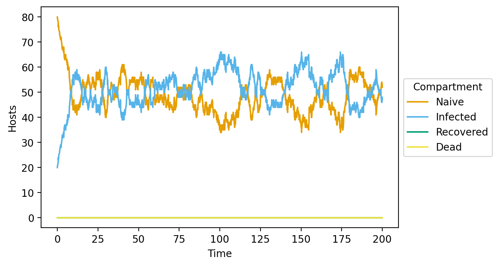

Basic usage
[1]:
from opqua.model import Model
Make a new model object
[2]:
my_model = Model()
Create a new set of parameters called my_setup to be used to simulate a population in the model.
Here, we will use the default parameter set for a host-host transmission model
[3]:
my_model.newSetup('my_setup', preset='host-host')
Create a new population of 100 hosts and 0 vectors called my_population. The population uses parameters stored in my_setup
[4]:
my_model.newPopulation('my_population', 'my_setup', num_hosts=100)
Add pathogens with a genome of AAAAAAAAAA to 20 random hosts in population my_population
[5]:
my_model.addPathogensToHosts( 'my_population',{'AAAAAAAAAA':20} )
Run the simulation for 200 time units
[6]:
my_model.run(0,200)
Simulating time: 71.89423840111455, event: CONTACT_HOST_HOST
Simulating time: 136.14665780191842, event: RECOVER_HOST
Simulating time: 200.15737579926133 END
Save the model results to a table
[7]:
data = my_model.saveToDataFrame('Basic_example.csv')
data
Saving file...
[Parallel(n_jobs=8)]: Using backend LokyBackend with 8 concurrent workers.
[Parallel(n_jobs=8)]: Done 2 tasks | elapsed: 0.3s
[Parallel(n_jobs=8)]: Batch computation too fast (0.19414451599121096s.) Setting batch_size=2.
[Parallel(n_jobs=8)]: Done 9 tasks | elapsed: 0.3s
[Parallel(n_jobs=8)]: Done 16 tasks | elapsed: 0.3s
[Parallel(n_jobs=8)]: Batch computation too fast (0.01929759979248047s.) Setting batch_size=4.
[Parallel(n_jobs=8)]: Done 26 tasks | elapsed: 0.3s
[Parallel(n_jobs=8)]: Done 44 tasks | elapsed: 0.3s
[Parallel(n_jobs=8)]: Batch computation too fast (0.013352155685424805s.) Setting batch_size=8.
[Parallel(n_jobs=8)]: Done 76 tasks | elapsed: 0.3s
[Parallel(n_jobs=8)]: Batch computation too fast (0.01486515998840332s.) Setting batch_size=16.
[Parallel(n_jobs=8)]: Done 124 tasks | elapsed: 0.4s
[Parallel(n_jobs=8)]: Done 224 tasks | elapsed: 0.4s
[Parallel(n_jobs=8)]: Batch computation too fast (0.02699422836303711s.) Setting batch_size=32.
[Parallel(n_jobs=8)]: Done 408 tasks | elapsed: 0.5s
[Parallel(n_jobs=8)]: Batch computation too fast (0.05492806434631348s.) Setting batch_size=64.
[Parallel(n_jobs=8)]: Done 792 tasks | elapsed: 0.6s
[Parallel(n_jobs=8)]: Batch computation too fast (0.08415079116821289s.) Setting batch_size=128.
[Parallel(n_jobs=8)]: Done 1292 tasks | elapsed: 0.7s
[Parallel(n_jobs=8)]: Done 1495 tasks | elapsed: 0.7s
[Parallel(n_jobs=8)]: Done 1698 tasks | elapsed: 0.7s
[Parallel(n_jobs=8)]: Done 1793 tasks | elapsed: 0.7s
[Parallel(n_jobs=8)]: Done 1956 out of 1956 | elapsed: 0.7s finished
...file saved.
[7]:
| Time | Population | Organism | ID | Pathogens | Protection | Alive | |
|---|---|---|---|---|---|---|---|
| 0 | 0.0 | my_population | Host | my_population_0 | NaN | NaN | True |
| 1 | 0.0 | my_population | Host | my_population_1 | AAAAAAAAAA | NaN | True |
| 2 | 0.0 | my_population | Host | my_population_2 | AAAAAAAAAA | NaN | True |
| 3 | 0.0 | my_population | Host | my_population_3 | AAAAAAAAAA | NaN | True |
| 4 | 0.0 | my_population | Host | my_population_4 | NaN | NaN | True |
| ... | ... | ... | ... | ... | ... | ... | ... |
| 195595 | 200.0 | my_population | Host | my_population_95 | AAAAAAAAAA | NaN | True |
| 195596 | 200.0 | my_population | Host | my_population_96 | NaN | NaN | True |
| 195597 | 200.0 | my_population | Host | my_population_97 | AAAAAAAAAA | NaN | True |
| 195598 | 200.0 | my_population | Host | my_population_98 | AAAAAAAAAA | NaN | True |
| 195599 | 200.0 | my_population | Host | my_population_99 | NaN | NaN | True |
195600 rows × 7 columns
Plot the number of susceptible and infected hosts in the model over time
[8]:
graph = my_model.compartmentPlot('Basic_example_compartment.png', data)
